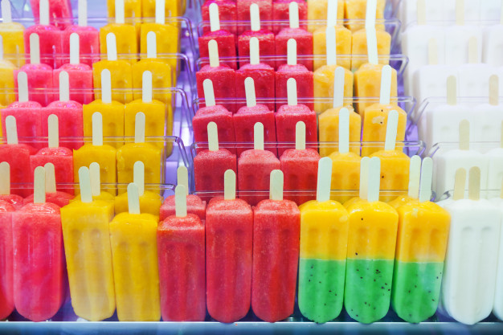
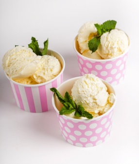
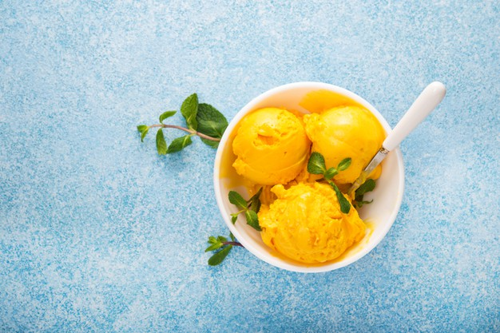
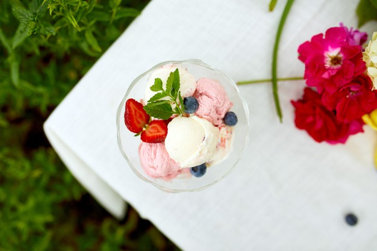
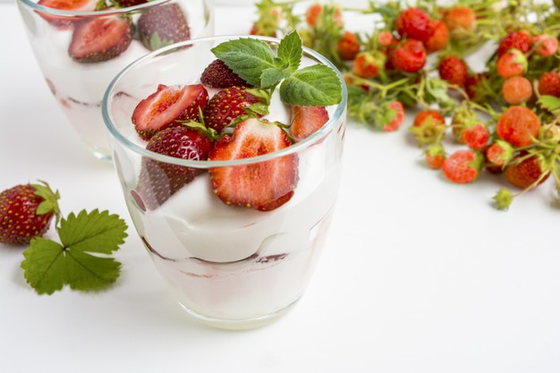
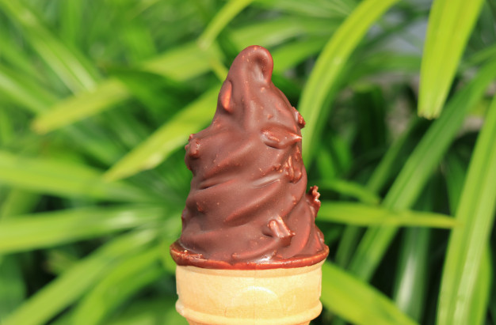

Jenis-Jenis Es Krim
Es krim menjadi salah satu hidangan favorit, bahkan di seluruh dunia. Berbagai negara pun memiliki es krim khas negaranya masing-masing. Misalnya seperti Italia yang begitu terkenal dengan es krim gelato. Ada juga es krim khas Amerika yang sudah mendunia, yaitu sundae. Sama-sama terkenal, berbagai jenis es krim yang satu dan lainnya tetap berbeda. Sayangnya masih banyak orang yang sulit membedakannya, sehingga sejumlah orang menyebut semua jenisnya sama, yaitu 'es krim'. Berikut tujuh jenis es krim beserta perbedaannya seperti Brilio Food rangkum dari berbagai sumber:
1. Popsicle
Foto:freepik.com
Popsicle adalah es krim dengan tangkai kayu yang berfungsi sebagai gagang agar dapat dimakan dengan mudah. Popsicle biasanya memiliki tekstur yang lebih keras dibandingkan dengan es krim lainnya. Popsicle tersedia dalam berbagai rasa mulai dari susu, cokelat, hingga buah-buahan. Es krim jenis ini dapat dengan mudah ditemui di pasaran.
2. Sundae
Foto:freepik.com
Sundae adalah es krim lembut yang disajikan di dalam gelas atau cup. Rasa es krim sundae pada dasarnya adalah vanilla. Es krim ini cocok dikombinasikan dengan berbagai topping seperti saus cokelat, stroberi, kacang, potongan buah, dan lainnya.
3. Sorbet
Foto:freepik.com
Sorbet diolah sedemikian rupa agar menjadi es krim yang rendah lemak. Tidak seperti es krim pada umumnya yang diolah menggunakan susu, sorbet ini tidak menggunakan susu sama sekali. Sorbet dibuat dari buah-buahan yang dihaluskan bersama gula dan kemudian dibekukan.
4. Sherbet
Foto:freepik.com
Hampir mirip dengan sorbet, sherbet juga terbuat dari buah-buahan yang dihaluskan. Namun jenis es krim ini biasa disajikan dengan tambahkan dengan sedikit susu atau krim. Tekstur es jenis sherbet ini lembut, rasanya lebih creamy, dan cenderung tidak mudah meleleh dibandingkan dengan sorbet.
5. Gelato
Foto:freepik.com
Gelato merupakan es krim asal Italia punya tekstur lebih padat dibanding es krim pada umumnya. Gelato diolah dengan susu yang lebih banyak daripada krimnya dan tidak menggunakan telur. Es krim gelato termasuk salah satu es yang punya banyak penggemar.
6. Frozen Yogurt
Foto:freepik.com
Es krim frozen yogurt adalah yogurt yang dibekukan. Rasa frozen yogurt ini cenderung asam seperti rasa yogurt pada umumnya. Untuk menetralkan rasa asam tersebut, frozen yogurt juga ditaburi dengan berbagai topping baik cokelat, kacang, dan buah-buahan.
7. Soft Serve
Foto:freepik.com
Soft serve merupakan es krim klasik khas Amerika yang pertama kali dibuat sekitar tahun 1930. Es krim jenis ini punya tekstur halus. Ada dua rasa, yaitu vanilla dan cokelat. Cara penyajiannya, es krim ini bisa dicelupkan ke lelehan cokelat terlebih dulu.
Sumber: https://m.briliofood.net/amp/foodpedia/sering-dikira-sama-ini-7-jenis-es-krim-dan-perbedaannya-210610o.html